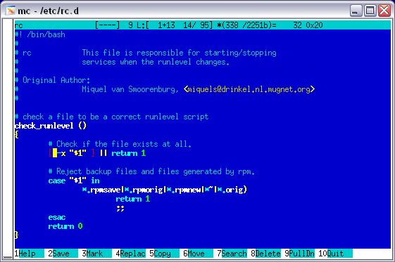

 This release contains Midnight Commander modified to use Colorer-take5 as a syntax highlighting engine.
Source package will allow you to rebuild it for any platform, MC available on, and Binary package contains Midnight Commander, compiled for i386 Linux (mdk10).
To install it you should have Colorer-take5-linux already installed or unpacked somewere (however any form of its distribution is suitable).
MC binary is compiled with hardcoded /usr/ prefix, so you should have MC already installed there or recompile it from the source package with your prefix.
Next, just use the provided 'mc' binary to run it. In case you have no root rights you can look for the 'mclr.sh' script and fix it for yourself to make it possible to run this MC mod from non-root account.
Editor is now capable to show paired constructions, like it
works in eclipse/far versions.
Moreover, two editor menu options were added:
Command/"Select Block" and "Select Block Content".
These allows you to mark with selection current paired construction.
Of course, "Go to matching Bracket" (alt/meta-b) also works with Colorer.
There is no UI settings now, however you can manually change default color
style, colorer uses to highlight the text.
To do this just add this section to your ~/.mc/ini file:
[Colorer] colorer_hrd_string=nc
Changing it's value you can choose one of available HRD styles (see your colorer/catalog.xml file for list of available styles).